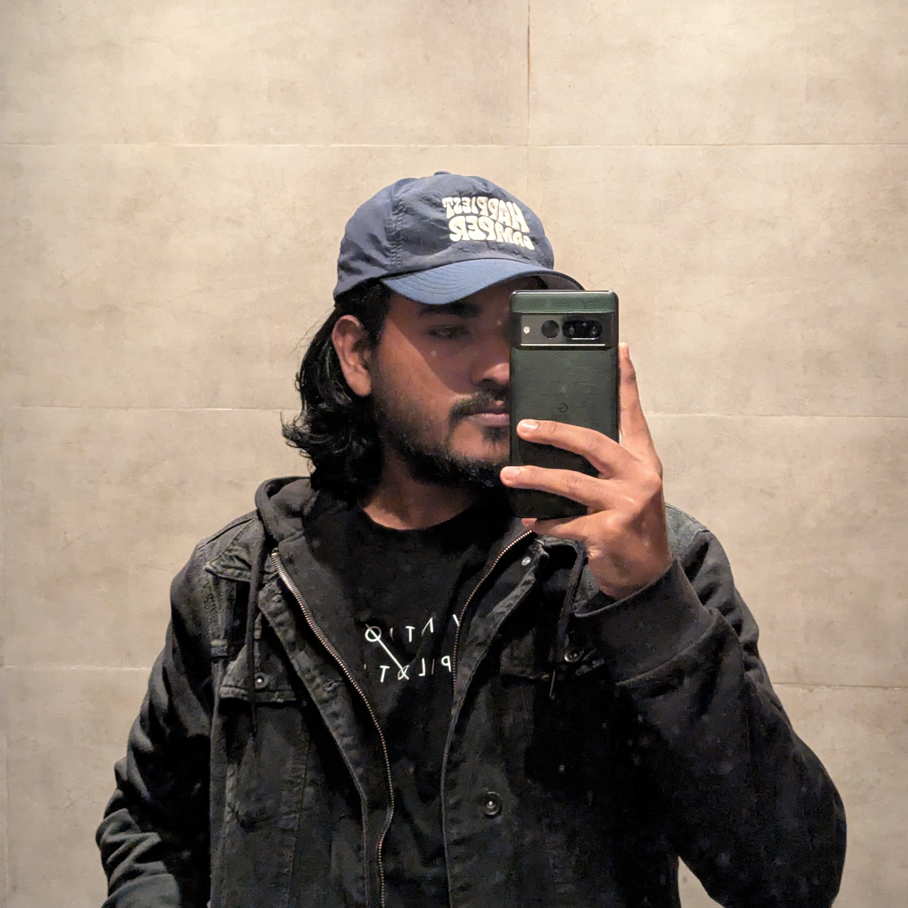

Personal project
Developer Portfolio
A terminal-inspired personal website showcasing my background, technical skills, experience, and selected projects.
View source on GitHub● Welcome to my digital space
I’m a Computer Science and Engineering student at IUB, building my software development skills through hands-on projects. I’m focused on programming fundamentals and full-stack web development, and I’m working toward software engineering internship opportunities.
Open to learning opportunities and software engineering internships
Welcome to Sahkib Ahad Chowdhury's interactive terminal.
Type help to see available commands.
> Always learning. Always building.
// 01. About me

I'm pursuing a BSc in Computer Science and Engineering at Independent University, Bangladesh (IUB). I enjoy exploring how software works and turning ideas into practical projects.
My current focus is strengthening my programming fundamentals and learning full-stack web development. I also enjoy embedded systems and experimenting with hardware. I believe consistent practice, curiosity, and building real projects are essential to becoming a better developer.
// 02. Skills
Technologies I've studied or worked with so far.
Web structure
Web styling
Programming fundamentals
Object-oriented programming
Desktop application development
Database fundamentals
Version control basics
Repositories and collaboration
Currently strengthening JavaScript fundamentals and building interactive web projects.
// 03. Projects
A terminal-inspired personal website showcasing my background, technical skills, experience, and selected projects.
View source on GitHubA team-based JavaFX application for property listings, role-based dashboards, search and filtering, simulated transactions, and file-based persistence.
View source on GitHubA web application for student records and school fee settings, with account access, CRUD operations, and database-backed fee configuration.
View source on GitHubA TinyLang parser project that uses lexical analysis, recursive-descent parsing, and parser-derived expected tokens to provide contextual syntax-error repair guidance.
View source on GitHubA Raspberry Pi Pico and OLED-based digital art project with a MicroPython animation engine featuring procedural graphics, geometric motion, and terminal-inspired visuals.
View source on GitHubA frontend practice project inspired by an online shopping storefront. Visit the repository to review the current implementation and source files.
View source on GitHubA classic arcade game built with Python and Pygame, compiled to WebAssembly so it can run in a browser. Includes scoring, lives, progressive levels, and keyboard or touch controls.
A lightweight monitoring system that collects CPU, memory, and disk metrics, visualizes usage history, raises threshold alerts, and detects offline machines.
View source on GitHubDocumentation and planning for a campus service-request management system using a planned React and TypeScript frontend, FastAPI backend, REST APIs, and role-based access.
View project repository// 04. Experience
October 2024 – Present
Working part-time in system administration while continuing my university studies and developing my technical skills.
2023 – Present
Studying programming, computer science fundamentals, databases, and software development. Recognized on the Dean’s List for Autumn 2024.
// 05. Contact
Have a project idea, an opportunity, or just want to talk about technology? Feel free to reach out.
Sahkib159@gmail.com